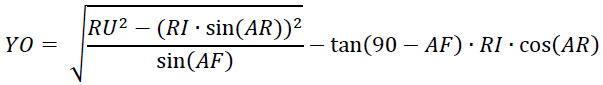

Contents
function varargout = Tube_Notch(varargin) % TUBE_NOTCH MATLAB code for Tube_Notch.fig % TUBE_NOTCH, by itself, creates a new TUBE_NOTCH or raises the existing % singleton*. % Begin initialization code - DOin NOT EDIT gui_Singleton = 1; gui_State = struct('gui_Name', mfilename, ... 'gui_Singleton', gui_Singleton, ... 'gui_OpeningFcn', @Tube_Notch_OpeningFcn, ... 'gui_OutputFcn', @Tube_Notch_OutputFcn, ... 'gui_LayoutFcn', [] , ... 'gui_Callback', []); if nargin && ischar(varargin{1}) gui_State.gui_Callback = str2func(varargin{1}); end if nargout [varargout{1:nargout}] = gui_mainfcn(gui_State, varargin{:}); else gui_mainfcn(gui_State, varargin{:}); end % End initialization code - DOin NOT EDIT end % Executes just before Tube_Notch is made visible. function Tube_Notch_OpeningFcn(hObject, eventdata, handles, varargin) % Choose default command line output for Tube_Notch handles.output = hObject; % Update handles structure guidata(hObject, handles); set(handles.unit,'String','in') % Defalts units to inches handles.DU = str2double(get(handles.DUin,'String')); handles.DO = str2double(get(handles.DOin,'String')); handles.TH = str2double(get(handles.THin,'String')); calc_Callback(handles.calc, eventdata,handles); % Calculates at startup uicontrol(handles.AF); % Sets curser to *Angle of Fit* editbox % Puts link to MATLAB code on GUI labelStr = '<html><center><a href="">Tube Notch'; cbStr = 'web(''http://tptn.weebly.com/tube-notch.html'');'; hButton = uicontrol('string',labelStr,'pos',[350,340,70,20],'callback',cbStr); jButton = findjobj(hButton); % get FindJObj from the File Exchange jButton.setCursor(java.awt.Cursor(java.awt.Cursor.HAND_CURSOR)); jButton.setContentAreaFilled(0); % or: jButton.setBorder([]); end % Outputs from this function are returned to the command line. function varargout = Tube_Notch_OutputFcn(hObject, eventdata, handles) WinOnTop(gcf); % Defalts window to stay in top clc end
Getting Inputs from Tube Notch GUI
These functions get the inputs for the GUI and make any necessary conversions between units. They also provide error messages indicating invalid or out-of-range inputs.
function AF_Callback(hObject, eventdata, handles) AF = str2double(get(handles.AF,'String')); if AF < 10 || AF > 90 error = 'ERROR: Angle of fit must be between 10° and 90°.'; set(handles.error, 'String', error) set(hObject,'foregroundcolor',[1 0 0]) set(handles.code_disp,'String', ' *******ERROR*******'); else set(hObject,'foregroundcolor',[0 0 0]) set(handles.error, 'String', ' ') calc_Callback(handles.calc, eventdata,handles); end uicontrol(handles.DUin); end function DUin_Callback(hObject, eventdata, handles) if get(handles.SI,'Value')==1 DU = str2double(get(handles.DUin,'String'))/25.4; DO = str2double(get(handles.DOin,'String'))/25.4; else DU = str2double(get(handles.DUin,'String')); DO = str2double(get(handles.DOin,'String')); end handles.DU = DU; handles.DO = DO; if DO > DU error = 'ERROR: Diameter of cut tube can''t be greater than uncut tube.'; set(handles.error, 'String', error) set(hObject,'foregroundcolor',[1 0 0]) set(handles.code_disp,'String', ' *******ERROR*******'); elseif DU > 4 error = 'ERROR: Diameter of tube can''t be greater than 4''.'; set(handles.error, 'String', error) set(hObject,'foregroundcolor',[1 0 0]) set(handles.code_disp,'String', ' *******ERROR*******'); else set(handles.error, 'String', ' ') set(handles.DUin,'foregroundcolor',[0 0 0]) set(handles.DOin,'foregroundcolor',[0 0 0]) calc_Callback(handles.calc, eventdata,handles); end uicontrol(handles.DOin); end function DOin_Callback(hObject, eventdata, handles) if get(handles.SI,'Value')==1 DU = str2double(get(handles.DUin,'String'))/25.4; DO = str2double(get(handles.DOin,'String'))/25.4; elseif get(handles.US,'Value')==1 DU = str2double(get(handles.DUin,'String')); DO = str2double(get(handles.DOin,'String')); end handles.DU = DU; handles.DO = DO; if DO > DU error = 'ERROR: Diameter of cut tube can''t be greater than uncut tube.'; set(handles.error, 'String', error) set(hObject,'foregroundcolor',[1 0 0]) set(handles.code_disp,'String', ' *******ERROR*******'); elseif DO > 4 error = 'ERROR: Diameter of tube can''t be greater than 4''.'; set(handles.error, 'String', error) set(hObject,'foregroundcolor',[1 0 0]) set(handles.code_disp,'String', ' *******ERROR*******'); else set(handles.error, 'String', ' ') set(handles.DOin,'foregroundcolor',[0 0 0]) set(handles.DUin,'foregroundcolor',[0 0 0]) calc_Callback(handles.calc, eventdata,handles); end uicontrol(handles.THin); end function THin_Callback(hObject, eventdata, handles) if get(handles.SI,'Value')==1 TH = str2double(get(handles.THin,'String'))/25.4; else TH = str2double(get(handles.THin,'String')); end handles.TH = TH; if TH < .05 || TH > .375 error = 'ERROR: Cut tube wall must be between .05'' and .375''.'; set(handles.error, 'String', error) set(hObject,'foregroundcolor',[1 0 0]) set(handles.code_disp,'String', ' *******ERROR*******'); else set(handles.error, 'String', ' ') set(hObject,'foregroundcolor',[0 0 0]) calc_Callback(handles.calc, eventdata,handles); end uicontrol(handles.calc); end function speed_Callback(hObject, eventdata, handles) s = str2double(get(handles.speed,'String')); calc_Callback(handles.calc, eventdata,handles); if s < 0 || s > 500 error = 'ERROR: Cutting speed must be between 0 and 500 ipm.'; set(handles.error, 'String', error) set(hObject,'foregroundcolor',[1 0 0]) else set(hObject,'foregroundcolor',[0 0 0]) set(handles.error, 'String', ' ') end end function pierce_Callback(hObject, eventdata, handles) P = str2double(get(handles.pierce,'String')); calc_Callback(handles.calc, eventdata,handles); if P < 0 || P > 30 error = 'ERROR: Pierce delay must be between 0 and 30 s.'; set(handles.error, 'String', error) set(hObject,'foregroundcolor',[1 0 0]) else set(hObject,'foregroundcolor',[0 0 0]) set(handles.error, 'String', ' ') end end
Calculating Joint Profile and Generating G-code
The code below is the heart of Tube Notch. It calculates the the Y-offset measured from the plane that is both perpendicular to the axis of the branch and coincident with the point defined by the intersection of the axes of the branch and header. The intersection of the outer surface of the branch with the header the Y-offset is given by:

If ID is substituted for OD in the above equation, the Y-offset for the intersection of the inner surface of the branch with the header is obtained.
% Executes on button press in calc. function calc_Callback(hObject, eventdata, handles) existingFig = findobj(0,'Name', 'Notching Template Preview'); close(existingFig); % input of joint and tube parameters DU = handles.DU; RU = .5*DU; % converts diameter to radius DO = handles.DO; RO = .5*DO; % converts diameter to radius AF = str2double(get(handles.AF,'String')); TH = handles.TH; RI = RO - TH; % calculates inner radius of cut tube unit1 = get(handles.unit, 'String'); unit = unit1{:}; DUin = str2double(get(handles.DUin, 'String')); DOin = str2double(get(handles.DOin, 'String')); THin = str2double(get(handles.THin, 'String')); N = zeros(360,1); % preallocates variable N to save time in loop Y = zeros(360,1); % preallocates variable Y to save time in loop % Calculates the Y-offset based on the intersection of the inner and outer % surfaces of the cut tube with the outer surface of the uncut tube and % takes the highest value for AR=1:360 YO = sqrt(RU^2-(RO*sind(AR)).^2) /sind(AF)- tand(90-AF)*RO*cosd(AR); YI = sqrt(RU^2-(RI*sind(AR)).^2) /sind(AF)- tand(90-AF)*RI*cosd(AR); N(AR) = AR; if YO>YI; Y(AR)=YO; else Y(AR)=YI; end end YO1 = sqrt(RU^2-(RO*sind(N)).^2) /sind(AF)- tand(90-AF)*RO*cosd(N); YI1 = sqrt(RU^2-(RI*sind(N)).^2) /sind(AF)- tand(90-AF)*RI*cosd(N); % Stores data for use in other functions handles.Y = Y; handles.N = N; handles.YO1 = YO1; handles.YI1 = YI1; guidata(hObject, handles) P = 1000 * str2double(get(handles.pierce,'String')); % Pierce time in ms F = str2double(get(handles.speed,'String')); % Cutting speed x = Y(360); % Starting pos. same as end % Print G-code to text file fileID = fopen('dat.txt', 'w+'); fprintf(fileID, '%%\r\n\r\n'); fprintf(fileID, datestr(now,'(mm/dd/yyyy HH:MM AM)\r\n')); fprintf(fileID, '(Uncut Tube OD: %g %s)\r\n',DUin, unit); fprintf(fileID, '(Cut Tube OD: %g %s)\r\n',DOin, unit); fprintf(fileID, '(Angle of Fit: %g°)\r\n',AF); fprintf(fileID, '(Tubing Wall: %g %s)\r\n\r\n',THin, unit); fprintf(fileID, 'G00 A0 X%4.3f;\r\nM07;\r\nG04 P%.0f;\r\nG01 F%.0f;\r\n',x , P, F); for AR = 1:360 fprintf(fileID,'A %-3.0f X %3.3f;\r\n', AR, Y(AR)); end fprintf(fileID,'M05;\r\nG28;\r\nM30\r\n\r\n%%'); fclose(fileID); % Read the G-code written to text file fid = fopen('dat.txt','r'); code = textscan(fid,'%s','delimiter','\n'); fclose(fid); % Display G-code in listbox set(handles.code_disp,'String',code{:}); end
Saving G-code as .txt
This function lets the user save G-code as ASCII text for use with Fanuc dialect machine tool controllers. The function reads the dat.txt file generated by the calc function and lets the user save it with a different name and location.
function save_code_Callback(hObject, eventdata, handles) % Opens G-code text file and reads data fid = fopen('dat.txt','r'); code = fread(fid); fclose(fid); % Gets G-code destination location from user [file,path] = uiputfile('*.txt','Save file name'); if isequal(file,0); % Prevents error if user cancels return else fileID = fopen(fullfile(path, file),'w'); % Opens destination location fwrite(fileID, code); % and writes G-code to it fclose(fileID); if get(handles.open_code,'Value') == 1 % Opens .txt if user selected winopen(fullfile(path, file)); % checkbox to do so end end end
Previewing the Template
The code below generates a preview of the notching template. The preview is scaled in aspect ratio, but should not be used for actual notching as screen resolution variations may cause scaling problems.
function view_temp_Callback(hObject, eventdata, handles) existingFig = findobj(0,'Name', 'Notching Template Preview'); close(existingFig); % Closes any previously generated template YO1 = handles.YO1; YI1 = handles.YI1; N = handles.N; Y = handles.Y; DU = handles.DU; DO = handles.DO; AF = str2double(get(handles.AF,'String')); TH = handles.TH; unit1 = get(handles.unit, 'String'); unit = unit1{:}; DUin = str2double(get(handles.DUin, 'String')); DOin = str2double(get(handles.DOin, 'String')); THin = str2double(get(handles.THin, 'String')); % plot Y, YO1 and YI1 as functions of angular rotation hFig = figure; set(hFig ,'visible','on') set(hFig, 'Menubar','none'); set(hFig ,'name','Notching Template Preview','numbertitle','off') set(hFig, 'resize', 'off'); % hFig = figure('Menubar','none'); hold on; grid on; YOplot = plot(N,YO1,'k--'); YIplot = plot(N,YI1,'k--'); Yplot = plot (N,Y, 'k-'); axis([0,360,0,inf]); set(YIplot, 'color', [0.5 0.5 0.5]) set(Yplot,'LineWidth',1); set(YOplot, 'color', [0.5 0.5 0.5]) set (gca, 'XTick', 0:45:360) box annotation('textbox',... [0.03 0.75 0.5 0.15],... 'String',{'Tube notching template for:', ... ['Uncut tube OD: ' num2str( DUin), unit],... ['Cut Tube OD: ' num2str( DOin), unit],... ['Cut tube wall: ' num2str( THin), unit],... ['Angle of fit: ' num2str( AF),'°'],... ['Created: ' datestr(now,'mm/dd/yyyy HH:MM AM\n')]}, ... 'FontSize',10,... 'FontName','Lucida Console',... 'EdgeColor','none',... 'BackgroundColor','none',... 'Color',[0 0 0]); hold off; set(gca, 'XTickLabel',[], 'YTickLabel',[], ... 'Units','normalized', 'Position',[0 0 1 1]) % units are in inches xSize = DO*pi; % figure size on paper (width) ySize = max(Y); % figure size on paper (height) xMargin = .25; % left/right margins from page borders yMargin = .25; % top/bottom margins from page borders x = xSize + 2*xMargin; % paper size y = ySize + 2*yMargin; % paper size % set figure size and aspect ratio displayed on screen set(hFig, 'Units','inches', 'Position',[0 0 xSize ySize]) movegui(hFig, 'center') if get(handles.top,'Value') == 1 WinOnTop(hFig); else WinOnTop(hFig, false); end end
Saving Template as Accurately Scaled PDF
The following code plots the cut path and prints it to a PDF that is scaled so that if it is wrapped around a tube it will provide a very accurate template for use with the line scanning function on the Tracing Plasma Tubing Notcher. The templates can also be used for hand notching.
function save_temp_Callback(hObject, eventdata, handles) existingFig = findobj(0,'Name', 'Notching Template Preview'); close(existingFig); % Closes any preexisting template % Gets the data needed to generate template YO1 = handles.YO1; YI1 = handles.YI1; N = handles.N; Y = handles.Y; DU = handles.DU; DO = handles.DO; AF = str2double(get(handles.AF,'String')); TH = handles.TH; unit1 = get(handles.unit, 'String'); unit = unit1{:}; DUin = str2double(get(handles.DUin, 'String')); DOin = str2double(get(handles.DOin, 'String')); THin = str2double(get(handles.THin, 'String')); % plot Y, YO1 and YI1 as functions of angular rotation hFig = figure; set(hFig ,'visible','off') set(hFig, 'Menubar','none'); set(hFig ,'name','Template','numbertitle','off') hold on; grid on YOplot = plot(N,YO1,'k--'); YIplot = plot(N,YI1,'k--'); Yplot = plot (N,Y, 'k-'); axis([0,360,0,inf]); set(YIplot, 'color', [0.5 0.5 0.5]) set(Yplot,'LineWidth',1); set(YOplot, 'color', [0.5 0.5 0.5]) set (gca, 'XTick', 0:45:360) box % Prints template information to figure annotation('textbox',... [0.03 0.75 0.5 0.15],... 'String',{'Tube notching template for:', ... ['Uncut tube OD: ' num2str( DUin), unit],... ['Cut Tube OD: ' num2str( DOin), unit],... ['Cut tube wall: ' num2str( THin), unit],... ['Angle of fit: ' num2str( AF),'°'],... ['Created: ' datestr(now,'mm/dd/yyyy HH:MM AM\n')]}, ... 'FontSize',10,... 'FontName','Lucida Console',... 'EdgeColor','none',... 'BackgroundColor','none',... 'Color',[0 0 0]); hold off; set(gca, 'XTickLabel',[], 'YTickLabel',[], ... 'Units','normalized', 'Position',[0 0 1 1]) % units are in inches xSize = DO*pi; % figure size on paper (width) ySize = max(Y); % figure size on paper (height) xMargin = .25; % left/right margins from page borders yMargin = .25; % top/bottom margins from page borders x = xSize + 2*xMargin; % paper size y = ySize + 2*yMargin; % paper size % set figure size and aspect ratio displayed on screen set(hFig, 'Units','inches', 'Position',[0 0 xSize ySize]) movegui(hFig, 'center') % scale figure size for printing as template set(hFig, 'PaperUnits','inches') set(hFig, 'PaperSize',[x y]) set(hFig, 'PaperPosition',[xMargin yMargin xSize ySize]) set(hFig, 'PaperOrientation','portrait') % export template to PDF [file,path] = uiputfile('*.pdf','Save Template'); if isequal(file,0); return else print(hFig,'-dpdf', fullfile(path, file)); end if get(handles.open_temp,'Value') == 1 % Opens template PDF if user winopen(fullfile(path, file)); % selected checkbox to do so end end
Keeping the Window on Top
Since Tube Notch will be used extensively with MACH3 motion control software, it is highly desirable that the GUI window remain on top even if it does not have focus. By default Tube Notch uses WinOnTop to manipulate the window's Java script so that the GUI window stays on top. The user can return to normal window behavior by unchecking the "Stay on Top" checkbox.
function top_Callback(hObject, eventdata, handles) if get(handles.top,'Value') == 1 WinOnTop(gcf); else WinOnTop(gcf, false); end end
About and Help windows
% Executes on button press in help. function help_Callback(hObject, eventdata, handles) existingFig = findobj(0,'Name', 'Tube Notch Help'); close(existingFig); helpFig = figure; set(helpFig ,'visible','on') set(helpFig, 'Menubar','none'); set(helpFig ,'name','Tube Notch Help','numbertitle','off') set(helpFig, 'resize', 'off'); imshow('Help.jpg','Border','tight') if get(handles.top,'Value') == 1 WinOnTop(helpFig); else WinOnTop(helpFig, false); end end % Executes on button press in about. function about_Callback(hObject, eventdata, handles) existingFig = findobj(0,'Name', 'About Tube Notch'); close(existingFig); aboutFig = figure; set(aboutFig ,'visible','on') set(aboutFig, 'Menubar','none'); set(aboutFig ,'name','About Tube Notch','numbertitle','off') set(aboutFig, 'resize', 'off'); imshow('About.jpg','Border','tight') if get(handles.top,'Value') == 1 WinOnTop(aboutFig); else WinOnTop(aboutFig, false); end end
Input Unit System Selection
Tube Notch allows the user to enter the joint parameters in either US or SI units. Values in the input boxes will be converted from US to SI or vice versa depending on the state of the radio buttons. Output G-code will be in US customary units regardless of the input unit system.
function US_Callback(hObject, eventdata, handles) if get(handles.US,'Value') == 1 set(handles.unit,'String','in') DU = str2double(get(handles.DUin,'String'))/25.4; DO = str2double(get(handles.DOin,'String'))/25.4; TH = str2double(get(handles.THin,'String'))/25.4; set(handles.DUin,'String', num2str(DU)); set(handles.DOin,'String', num2str(DO)); set(handles.THin,'String', num2str(TH)); calc_Callback(handles.calc, eventdata,handles); end end % --- Executes on button press in SI. function SI_Callback(hObject, eventdata, handles) if get(handles.SI,'Value')==1 set(handles.unit,'String','mm') % Gets current *in* value and converts to *mm* DU = str2double(get(handles.DUin,'String'))*25.4; DO = str2double(get(handles.DOin,'String'))*25.4; TH = str2double(get(handles.THin,'String'))*25.4; % Replaces values in edit boxes with converted values set(handles.DUin,'String', num2str(DU)); set(handles.DOin,'String', num2str(DO)); set(handles.THin,'String', num2str(TH)); calc_Callback(handles.calc, eventdata,handles); end end
Miscellaneous Functions and Callbacks
% Executes on button press in open_code. function open_code_Callback(hObject, eventdata, handles) end % Executes on button press in open_temp. function open_temp_Callback(hObject, eventdata, handles) end % Executes during object creation, after setting all properties. function code_disp_CreateFcn(hObject, eventdata, handles) if ispc && isequal(get(hObject,'BackgroundColor'), get(0,'defaultUicontrolBackgroundColor')) set(hObject,'BackgroundColor','white'); end end % Executes on selection change in code_disp. function code_disp_Callback(hObject, eventdata, handles) end % Executes during object creation, after setting all properties. function error_CreateFcn(hObject, eventdata, handles) end